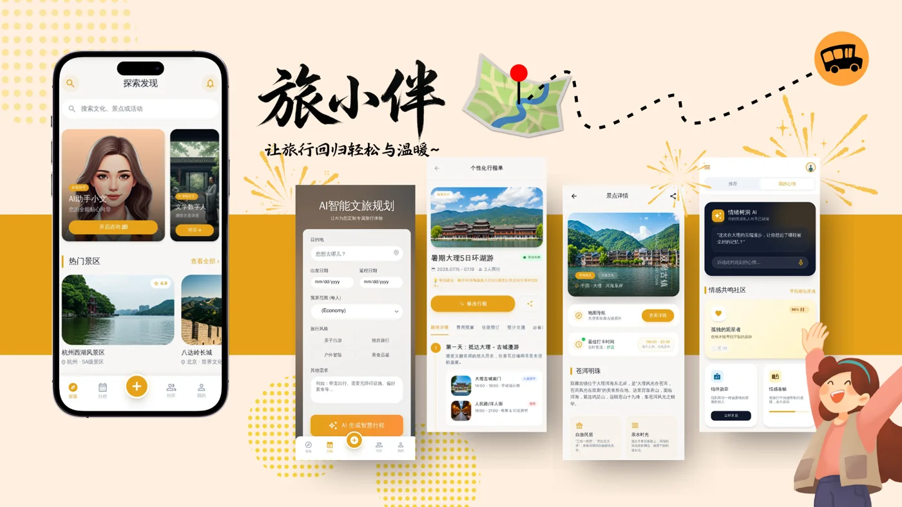
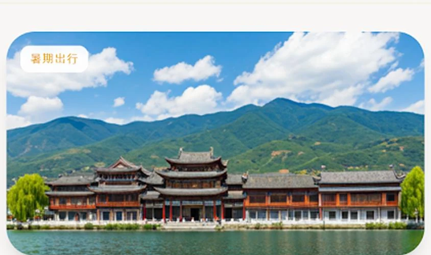
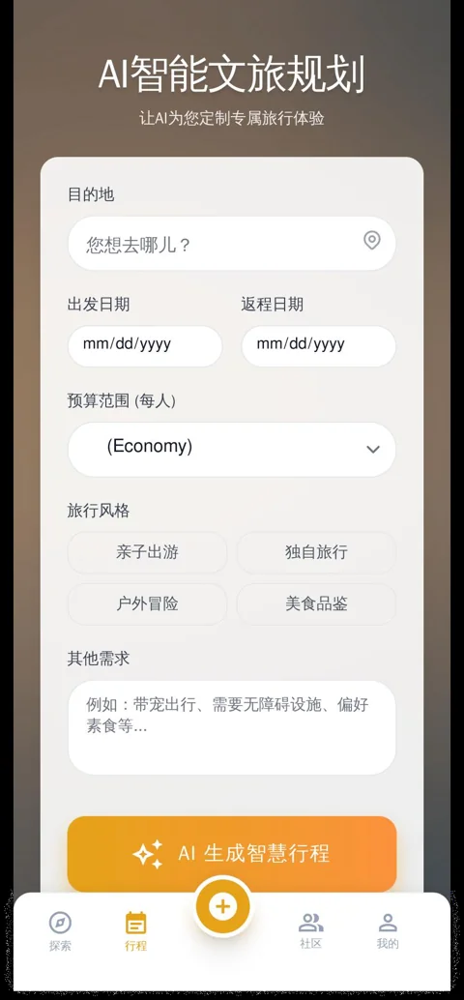
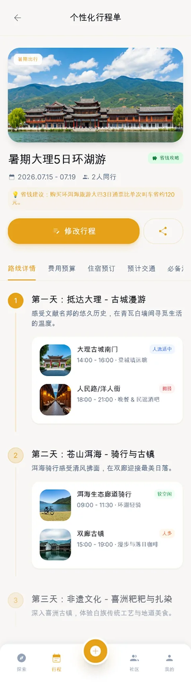
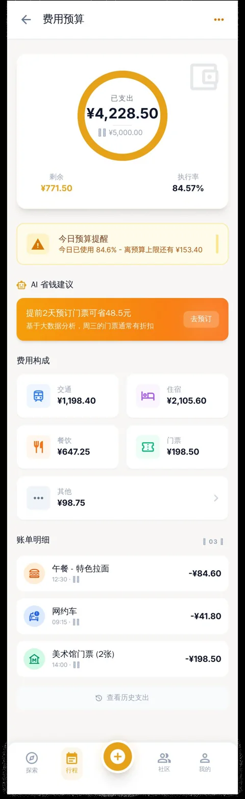

01
先懂你，再规划
同行人、预算、兴趣与节奏一起进入规划，不再只按“热门程度”机械推荐。
DALÍ PILOT 大理单城试点
不再拼凑几十篇攻略。告诉旅小伴你想去哪、和谁出发、预算多少，几秒得到一份能看懂、能调整、能出发的个性化行程。

WHY LVXIAOBAN
从信息搜索工具走向会理解、会权衡、会陪伴的旅行决策助手。
同行人、预算、兴趣与节奏一起进入规划，不再只按“热门程度”机械推荐。
每天的路线、时间和预算清楚呈现，一键减少步行、加入非遗或切换省钱方案。
天气、穿衣、附近美食和临时改线，都可以随时问贴心向导“小文”。
LIVE DEMO 可交互原型
演示说明 当前使用本地预设数据模拟规划流程，保证中期检查现场稳定运行。

10.02 — 10.042 人同行
上午错峰看古城，下午沿洱海追光；保留白族文化体验，也给同行人留出放松时间。
预算内还留有 ¥620，可作为临时交通与伴手礼储备。
TRIP COMPANION
天气、穿衣、吃什么，或者临时想改行程，我都在。
BEFORE · DURING · AFTER
中期版本先验证行前规划；行中陪伴与行后沉淀以产品原型呈现。
整合偏好、时间与预算，生成可以直接执行的逐日路线。
根据天气、客流和临时需求，给出更贴近当下的建议。
将照片、路线与心情整理成游记、报告和分享内容。
FROM CONCEPT TO INTERACTION
网站延续原方案的暖橙色、圆角卡片和旅行影像，同时针对电脑展示重新组织信息，不只是把手机截图排列在页面上。



PROJECT STATUS 中期进度
本阶段以“大理试点”验证用户是否愿意使用 AI 完成旅行决策。真实数据接入和规模化能力放在后续迭代。
核心场景、产品结构和移动端 UI 已形成。
完成需求输入、行程生成、预算和助手演示。
逐步验证地图、天气、POI 与大模型调用。